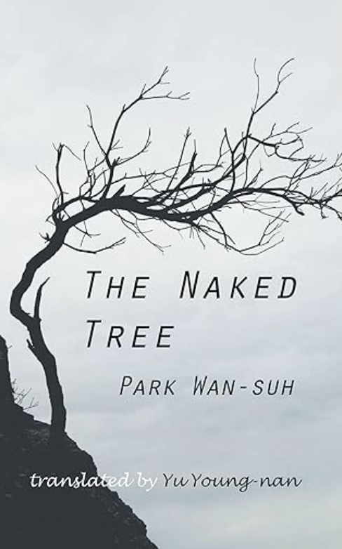

The Naked Tree
Genre: Historical Fiction, Coming-of-Age, Korean War
Author: Pak Wan-Suh
Description:
A portrait of a young woman navigating life in war-torn Seoul, confronting personal loss, cultural clashes, and societal expectations during the Korean War.
Overview:
The Naked Tree follows Lee Kyong, a 20-year-old woman working at an Army PX in Seoul during the Korean War. Grappling with the trauma of losing her father and brothers, Lee finds herself drawn to Oak Hui-do, a quiet painter twice her age. As the war rages on, the novel explores themes of grief, survival, and the rigid norms of a Confucian society, while depicting Seoul’s fragile daily life.